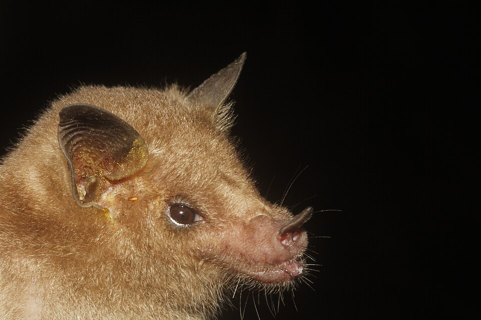

Más que una apariencia
Los murciélagos suelen despertar miedo o rechazo por su aspecto y por algunos mitos. Sin embargo, muchas especies cumplen funciones ecológicas esenciales como la polinización, la dispersión de semillas y el consumo de insectos.
Murciélago magueyero menor
Leptonycteris yerbabuenae

📍 Distribución
Se encuentra principalmente en México y también en el suroeste de Estados Unidos y partes de Centroamérica.
👀 Conócelo
Murciélago de tamaño mediano, adaptado para aprovechar recursos vegetales nocturnos.
🍯 ¿Qué come?
Principalmente néctar y frutos, incluyendo recursos de cactus y agaves.
🌱 Su importancia ecológica
Al visitar flores puede transportar polen entre plantas y contribuir a la dispersión de semillas de algunos cactus.
💡 Dato curioso
Está estrechamente relacionado con plantas de ambientes áridos y semiáridos.
🛡️ Conservación
Cuenta con evaluaciones y medidas de protección en México; se debe mostrar la categoría vigente con su fuente.
Murciélago magueyero mayor
Leptonycteris nivalis

📍 Distribución
Su distribución se concentra principalmente en México y se extiende hacia el sur de Estados Unidos.
👀 Conócelo
Murciélago nectarívoro de hocico alargado, adaptado para aprovechar flores profundas.
🍯 ¿Qué come?
Principalmente néctar y polen, además de otros recursos vegetales según la temporada.
🌱 Su importancia ecológica
Al desplazarse entre flores puede transportar polen y favorecer la reproducción de plantas.
💡 Dato curioso
Sus desplazamientos nocturnos conectan parches de vegetación.
🛡️ Conservación
Es una especie de interés para la conservación y su situación debe consultarse en evaluaciones recientes.
Murciélago trompudo
Choeronycteris mexicana

📍 Distribución
Se distribuye desde el suroeste de Estados Unidos, a través de México, hasta partes de Centroamérica.
👀 Conócelo
Su hocico alargado y lengua extensible están relacionados con su alimentación floral.
🍯 ¿Qué come?
Principalmente néctar y otros recursos florales.
🌱 Su importancia ecológica
Al visitar flores participa en la transferencia de polen entre plantas y en su reproducción.
💡 Dato curioso
Puede aprovechar flores profundas que no todos los polinizadores pueden utilizar.
🛡️ Conservación
Su conservación depende de mantener refugios, áreas de alimentación y conectividad entre hábitats.
Murciélago lengüilargo
Glossophaga mutica

📍 Distribución
Se encuentra en tierras bajas de México y Centroamérica.
👀 Conócelo
Murciélago pequeño con hocico y lengua adaptados para obtener alimento de flores.
🍯 ¿Qué come?
Néctar, polen, frutos e insectos; la importancia de cada recurso cambia según el sitio y la temporada.
🌱 Su importancia ecológica
Puede contribuir a la polinización, al movimiento de semillas y, al consumir insectos, participar en las redes tróficas.
💡 Dato curioso
Parte de la información que antes se atribuía a Glossophaga soricina corresponde actualmente a G. mutica.
🛡️ Conservación
Su información de conservación debe consultarse en la evaluación taxonómica y de amenaza más reciente.
🌎 ¿Por qué llamarlos aliados?
Los murciélagos forman parte de una red ecológica que conecta flores, frutos, semillas, insectos y otros organismos. Conocer sus funciones ayuda a reemplazar los prejuicios por una visión basada en la evidencia.
La próxima vez que veas un murciélago, recuerda: su apariencia no cuenta toda la historia.